17. Web Services
Note: By "web service," we mean any web application that delivers raw data consumed by a client—in the examples that follow, a console script. We are not concerned with any particular technology, such as REST (REpresentational State Transfer) or SOAP (Simple Object Access Protocol), for example, which deliver more or less raw data in a well-defined format. REST returns jSON, whereas SOAP returns XML. Each of these technologies precisely describes how the client must query the server and the format the server’s response must take. In this course, we will be much more flexible regarding the nature of the client request and the server response. However, the scripts written and the tools used are similar to those of the REST technology.
17.1. Introduction
Since PHP programs can be executed by a WEB server, such a program becomes a server program capable of serving multiple clients requests. From the client’s perspective, calling a web service amounts to requesting the URL of that service. The client can be written in any language, including PHP. In the latter case, we then use the network functions we just discussed. We also need to know how to "communicate" with a web service, that is, understand the http communication protocol between a WEB server and its clients clients. That was the purpose of the previous section.
The web client described in the linked section allowed us to discover part of the HTTP protocol.

In its simplest form, client/server communication proceeds as follows:
- the client opens a connection to port 80 on the web server;
- it makes a request for a document;
- the web server sends the requested document and closes the connection;
- the client then closes the connection;
The document can be of various types: text in HTML format, an image, a video… It can be an existing document (static document) or a document generated on the fly by a script (dynamic document). In the latter case, this is referred to as web programming. The script for dynamically generating documents can be written in various languages: PHP, Python, Perl, Java, Ruby, C#, VB.net…
In the following, we will use PHP scripts to dynamically generate text documents.

- In [1], the client establishes a connection with the server, requests a PHP script, and may or may not send parameters to that script;
- In [2], the web server executes the PHP script via the PHP interpreter. The script generates a document that is sent to the client [3];
- The server closes the connection. The client does the same;
The web server can process multiple clients instances simultaneously.
With the [Laragon] software package, the web server is an Apache server, an open-source server from the Apache Foundation (http://www.apache.org/). In the following applications, [Laragon] must be launched:

This starts the Apache web server as well as SGBD and MySQL.
Scripts executed by the web server will be written using the Netbeans tool. So far, we have written PHP scripts executed in a console environment:

The user uses the console to request the execution of a PHP script and receive the results.
In the client/server applications that follow:
- the client script is executed in a console context;
- the server script is executed in a web context;

The server script PHP cannot be located just anywhere in the file system. This is because the web server searches for the static and dynamic documents requested of it in locations specified by configuration. The default Laragon configuration causes documents to be searched for in the <Laragon>/www folder, where <Laragon> is the Laragon installation folder. Thus, if a web client requests a document D with the path URL, the web server will serve the document D located at the path [http://localhost/D].
In the following examples, we will place the server scripts in the [www/php7/scripts-web] folder. If a server script is named S.php, the web server will be requested with URL [http://localhost/php7/scripts-web/S.php]. The document [<Laragon>/www/php7/scripts-web/S.php] will then be served.

- in [1], the file [<laragon>/www];
- in [2], the folder [php7/scripts-web];
To create server scripts with Netbeans, we will proceed as follows:

- In [1-2], we create a new project
- in [3-4], we select the category [PHP] and the project [PHP Application]

- in [5], the project name;
- in [6], the project folder in the file system. Note that this is in the [<laragon>/www] folder, where it should be;
- in [7-8], accept the default values;
- in [9-10], accept the default values provided. In [10], note that the URL of the scripts we will place in this project will start with the path [http://localhost/php7/scripts-web/];

- In [11], web frameworks written in PHP are available. These frameworks are essential as soon as the web application grows in scale;
- In [12], you can add PHP libraries using the [Composer] tool. We used this tool twice in a [Terminal] window in Laragon:
- to install the [SwiftMailer] library, which allows you to send emails;
- to install the [php-mime-mail-parser] library, which allows you to read emails;
- in [13], once the project creation wizard has been validated, the project appears in [13] in the Projects tab;
17.2. Writing a static page
Note: For the rest of this guide, [Laragon] must be running.
We will show how to create a static page HTML (HyperText Markup Language) using Netbeans:

- In [1-5], we create a folder named [01];


- In [6-12], we create a file named HTML [exemple-01.html];
The [exemple-01.html] file is generated pre-filled as follows (May 2019):
<!DOCTYPE html>
<!--
To change this license header, choose License Headers in Project Properties.
To change this template file, choose Tools | Templates
and open the template in the editor.
-->
<html>
<head>
<title>TODO supply a title</title>
<meta charset="UTF-8">
<meta name="viewport" content="width=device-width, initial-scale=1.0">
</head>
<body>
<div>TODO write content</div>
</body>
</html>
Let's update its content as follows:
<!DOCTYPE html>
<html>
<head>
<title>PHP7 par l'example</title>
<meta charset="UTF-8">
<meta name="viewport" content="width=device-width, initial-scale=1.0">
</head>
<body>
<div><b>Ceci est un exemple de page statique</b></div>
</body>
</html>
We have changed the page title (line 4) and its content (line 9).
Now let’s have the Laragon Apache server display this page HTML:
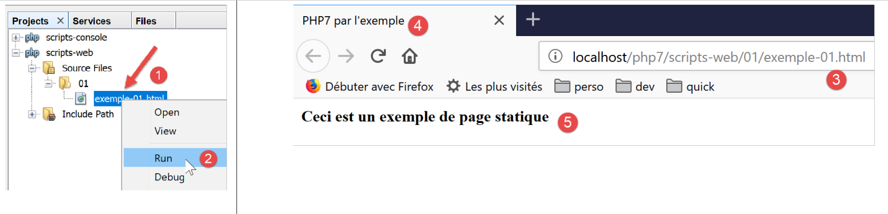
- In [1-2], we have the Laragon Apache server display the page;
- in [3], the URL of the displayed page;
- in [4], the title we modified;
- in [5], the content we modified;
The displayed page is a static page: you can reload it as many times as you like in the browser (F5), and the same content is always displayed.
Most browsers provide access to the data exchanged between the client and the server, as described in the “Link” section. In Firefox (May 2019), press F12 to access this data:

As indicated in [1], let’s reload the page (F5):

- In [2], the document loaded by the browser: we select it;

- In [5], the document to be analyzed is selected;
- in [3-4], we request to view the client/server exchanges;
- in [6], these exchanges;
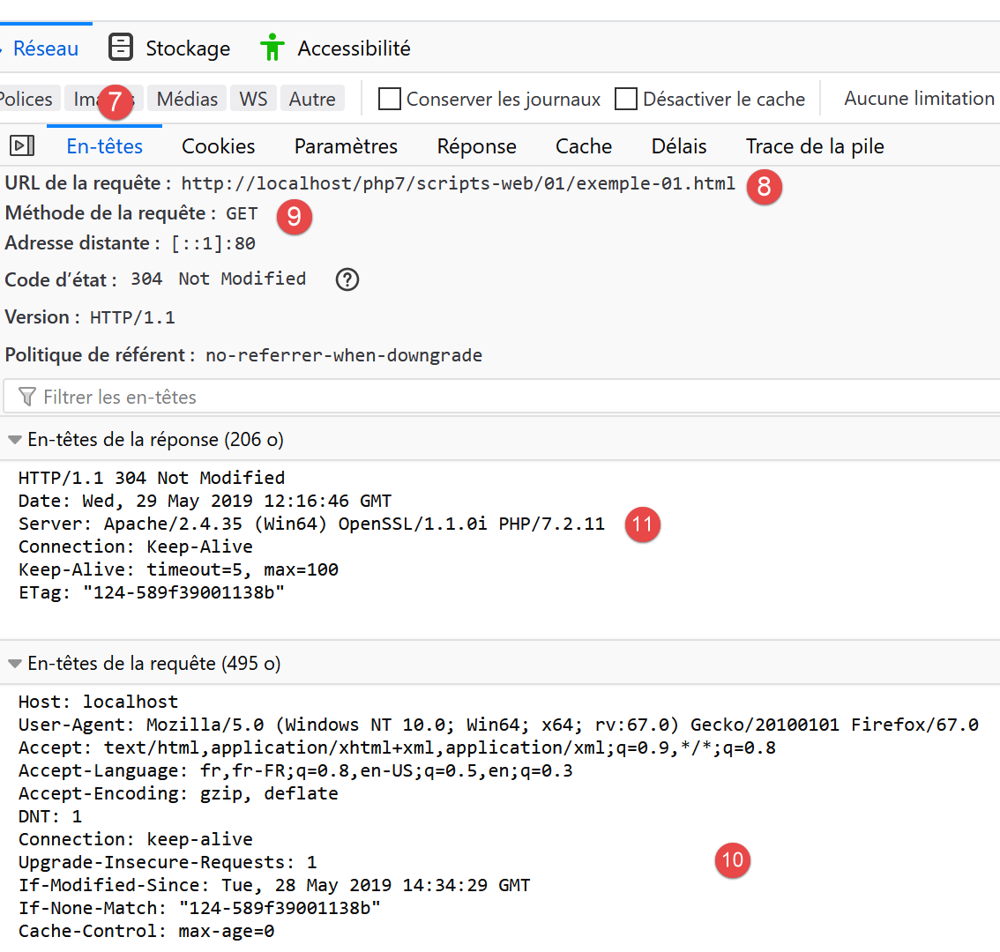
- in [7], we select the headers tab;
- in [8], the URL requested by the browser;
- in [9], the command sent to the server is [GET http://localhost/php7/scripts-web/01/exemple-01.html HTTP/1.1];
- in [10], the headers HTTP subsequently sent by the browser (the client);
- in [11], the headers HTTP from the server's response;

- in [12-14], the server response sent after the headers HTTP;
- in [14], we see that the client browser received the HTML page that we built. It then interpreted this code to display the following:

17.3. Creating a dynamic page in PHP
We are now writing a dynamic page in PHP:


- In [1-8], we create a page [exemple-01.php];
The [exemple-01.php] file is generated pre-filled as follows (May 2019):
<!DOCTYPE html>
<!--
To change this license header, choose License Headers in Project Properties.
To change this template file, choose Tools | Templates
and open the template in the editor.
-->
<html>
<head>
<meta charset="UTF-8">
<title></title>
</head>
<body>
<?php
// put your code here
?>
</body>
</html>
We modify the code above as follows:
<!DOCTYPE html>
<html>
<head>
<meta charset="UTF-8">
<title>Exemple de page dynamique</title>
</head>
<body>
<?php
// time: number of milliseconds between the present moment and 01/01/1970
// date-time display format
// d: 2-digit day
// m: 2-digit month
// y: 2-digit year
// H: hour 0.23
// I: minutes
// s: seconds
print "<b>Date et heure du jour : </b>" . date("d/m/y H:i:s", time());
?>
</body>
</html>
Comments
- line 5: we changed the page title;
- line 17: prints the current date and time;
Basically, the PHP script above writes the current time to the console. However, when executed by a web server, the output stream of the [print] instruction—which is usually associated with the script’s execution console—is redirected here to the connection linking the server to its client. Therefore, in a web context, the script above sends the current time as text to the client, in this case a browser.
Let’s run the script [exemple-01.php]:

- in [3], the URL requested from the Apache web server;
- in [4], the page title that we changed;
- in [5], the content generated by the [print] instruction;
This is a dynamic page because if you reload the page several times in the browser (F5), its content changes (the time changes).
The browser has received a HTML feed. To view this, you need to display the page’s source code in the browser:

- to view the [1] menu, right-click on the page in the browser;
- in [2], the URL of the page [exemple-01.php] but prefixed by [view-source :] [3];
- in [4], the content HTML that the browser displayed;
It is therefore important to remember that a script intended to be executed by a web server must produce a stream.
Let’s now look (F12) at the HTTP headers sent by the server to the client browser:

- in [3], a HTTP header that was not present when the static page was requested. This header indicates that the server’s response was generated by a PHP script;
We have seen that the server’s response (the HTML stream here) could be generated by a PHP script. The script can also generate the HTTP headers and virtually all elements of the server’s response.
17.4. Basics of the HTML language
This chapter will not go into detail about programming WEB in PHP. A MVC web application is developed in the section linked below. Instead, this chapter focuses on web services: PHP pages that deliver data, via a web server, to other clients and PHP pages. Nevertheless, we thought it would be useful to provide the reader with some basics of HTML.
A web browser can display various documents, the most common being the HTML document (HTML Markup Language). This is formatted text using tags of the form <tag>text</tag>. Thus, the text <b>important</b> will display the text "important" in bold. There are standalone tags, such as the <hr/> tag, which displays a horizontal line. We will not review all the tags that can be found in a HTML text. There are many WYSIWYG software tools that allow you to build a WEB page without writing a single line of HTML code. These tools automatically generate the HTML code for a layout created using the mouse and predefined controls. You can thus insert (using the mouse) a table into the page and then view the HTML code generated by the software to discover the tags to use for defining a table in a WEB page. It’s as simple as that. Furthermore, knowledge of the HTML language is essential, since dynamic web applications must generate the HTML code themselves to send to the clients and WEB servers. This code is generated by a program, and you must, of course, know what to generate so that the client receives the web page they want.
In short, there is no need to know the entire HTML language to start web programming. However, this knowledge is necessary and can be acquired through the use of WYSIWYG page-building software such as WEB and dozens of others. Another way to discover the subtleties of the HTML language is to browse the web and view the source code of pages that feature interesting characteristics you are not yet familiar with.
Consider the following example, which highlights some elements that can be found in a WEB document, such as:
- a table;
- an image;
- a link.

A HTML document generally has the following form:
<html> <head> <title>A title</title> ... </head> <body attributes> ... </body></html>
The entire document is enclosed within the tags <html>…</html>. It consists of two parts:
- <head>…</head>: this is the non-displayable part of the document. It provides information to the browser that will display the document. It often contains the <title>…</title> tag, which sets the text that will appear in the browser’s title bar. Other tags may be found here, notably tags defining the document’s keywords, which are then used by search engines. This section may also contain scripts, most often written in javascript or vbscript, which will be executed by the browser.
- <body attributes>…</body>: this is the section that will be displayed by the browser. The HTML tags contained in this section tell the browser the "desired" visual layout for the document. Each browser will interpret these tags in its own way. Two browsers may therefore display the same web document differently. This is generally one of the headaches for web designers.
The code for our example document is as follows:
<!DOCTYPE html>
<html xmlns="http://www.w3.org/1999/xhtml">
<head>
<meta http-equiv="Content-Type" content="text/html; charset=utf-8" />
<title>Quelques balises HTML</title>
</head>
<body style="background-image: url(images/standard.jpg)">
<h1 style="text-align: left">Quelques balises HTML</h1>
<hr />
<table border="1">
<thead>
<tr>
<th>Colonne 1</th>
<th>Colonne 2</th>
<th>Colonne 3</th>
</tr>
</thead>
<tbody>
<tr>
<td>cellule(1,1)</td>
<td style="text-align: center;">cellule(1,2)</td>
<td>cellule(1,3)</td>
</tr>
<tr>
<td>cellule(2,1)</td>
<td>cellule(2,2)</td>
<td>cellule(2,3</td>
</tr>
</tbody>
</table>
<br/><br/>
<table border="0">
<tr>
<td>Une image</td>
<td>
<img border="0" src="images/cerisier.jpg"/></td>
</tr>
<tr>
<td>Le site de Polytech'Angers</td>
<td><a href="http://www.polytech-angers.fr/fr/index.html">ici</a></td>
</tr>
</table>
</body>
</html>
tags and examples HTML | |
<title>Some tags HTML</title> (line 5) The text [Quelques balises HTML] will appear in the browser's title bar when the document is displayed | |
<hr /> : displays a horizontal line (line 10) | |
<table attributes>….</table>: to define the table (lines 12, 32) <thead>…</thead>: to define the column headers (lines 13, 19) <tbody>…</tbody>: to define the table content (lines 20, 31) <tr attributes>…</tr>: to define a row (lines 21, 25) <td attributes>…</td>: to define a cell (line 22) examples: <table border="1">…</table>: the border attribute defines the thickness of the table border <td style="text-align: center;">cell(1,2)</td> (line 23): defines a cell whose content will be cell(1,2). This content will be centered horizontally (text-align: center). | |
<img border="0" src="images/cerisier.jpg"/> (line 38): defines an image with no border (border="0") whose source file is [images/cerisier.jpg] on the web server (src="images/cerisier.jpg"). This link is located in a web document generated using the URL http://localhost/php7/scripts-web/01/balises.html. Therefore, the browser will request URL http://localhost/php7/scripts-web/01/images/cerisier.jpg to retrieve the image referenced here. | |
<a href="http://www.polytech-angers.fr/fr/index.html">here</a> (line 42): causes the text here to serve as a link to URL http://www.polytech-angers.fr/fr/index.html. | |
<body style="background-image: url(images/standard.jpg)"> (line 8): indicates that the image to be used as the page background is located at URL [images/standard.jpg] on the server WEB. In the context of our example, the browser will request URL http://localhost/php7/scripts-web/01/images/standard.jpg to retrieve this background image. |
We can see in this simple example that to build the entire document, the browser must make three requests to the server:
- http://localhost/php7/scripts-web/01/images/balises.html to retrieve the source HTML of the document
- http://localhost/php7/scripts-web/01/images/cerisier.jpg to retrieve the image cerisier.jpg
- http://localhost/php7/scripts-web/01/images/standard.jpg to retrieve the background image standard.jpg
This is shown by the network traffic between the client and the server (F12 in the browser):

- in [3-5], we see the three requests made by the browser;
17.5. Making a static page dynamic
Let’s show how we can make the page HTML [exemple-01.html] dynamic. Copy the content
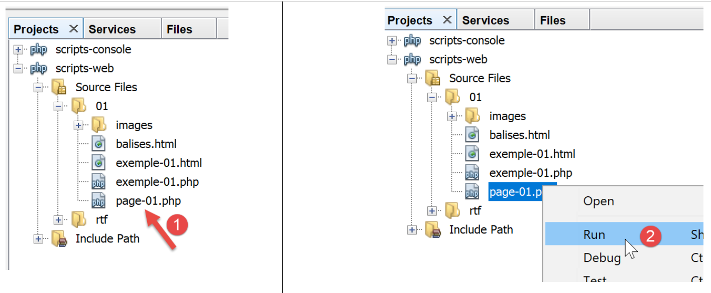
We have copied the content of [exemple-01.html] into the file [page-01.php]. If we run the web script [2], we get the following in the browser:

- in [3], the requested URL;
- in [4], the page title;
- in [5], the page content;
If we display the code received by the browser, we find the following:

- in [7], we have the code HTML placed in the script [exemple-01.php]
The PHP interpreter interpreted the [page-01.php] script and produced the same HTML stream as the static page [exemple-01.html]. In the script [page-01.php], there was no PHP, only HTML. This teaches us something: when the PHP interpreter finds HTML in a PHP script, it leaves it alone and sends it to the client as-is.
Now let’s put some PHP instructions in the [page-01.php] script so that the PHP interpreter has something to do:
<!DOCTYPE html>
<html>
<head>
<title><?php print $page->title ?></title>
<meta charset="UTF-8">
<meta name="viewport" content="width=device-width, initial-scale=1.0">
</head>
<body>
<div><b><?php print $page->contents ?></b></div>
</body>
</html>
In lines 4 and 9, we have included the code PHP to dynamically generate the page title and content. Here, we assume that the variable [$page] is an object containing the data to be displayed.
If we run this new code, we get the following result in the browser:

- in [1], the requested URL;
- in [2], the page title could not be displayed because the variable [$page] was not defined;
- in [3], the same applies to the content;
Now, let’s write the following [exemple-02.php] web script:

The script [exemple-02.php] will be as follows:
<?php
// define the page elements to be displayed
$page=new \stdclass();
$page->title="Un nouveau titre";
$page->contents="Un nouveau contenu généré dynamiquement";
// display [page-01]
require_once "page-01.php";
- lines 4-6: define the [$page] object;
- line 8: include the [page-01.php] script. The code in this script will then be interpreted:
- the variable [$page] is now defined, and the PHP interpreter will use it;
- the code HTML from [page-01.php] will be sent as-is to the client;
- the results of the operations PHP and [print] will be included in the text stream sent to the client;
Now, if we run the [exemple-02.php] web script, we get the following in the browser:
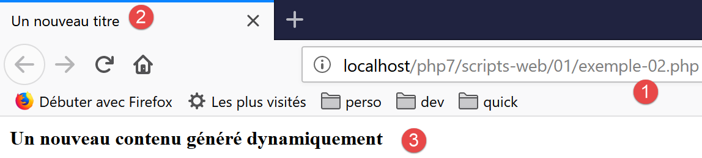
If we view the text content received by the browser:
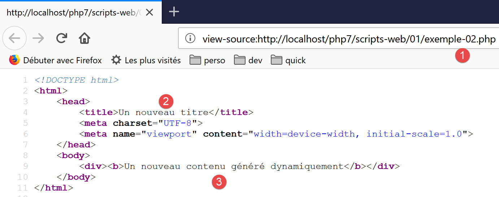
- the codes PHP, which were in [2] and [3], have been replaced by the results of the two commands [print];
From this example, we can take away two key points:
- the HTML pages intended for the browser can be isolated into PHP scripts containing only this HTML code and a few dynamic parts generated by PHP code. There should be as little PHP as possible in these pages;
- all logic that generates the dynamic data included in the HTML pages must be isolated in pure PHP scripts, containing no page presentation code (HTML, CSS, Javascript…);
This allows for a separation of tasks:
- the task of generating the web pages to be displayed (HTML, CSS, Javascript…);
- the task of the logic for the web application we are building. This logic can be implemented using a three-tier architecture, exactly as we did with the console scripts;
Next, we will build specific web scripts;
- they will send only data to the client and no formatting (HTML, CSS, Javascript). These will therefore be data servers rather than web pages;
- The clients components of these web scripts will be console scripts responsible for retrieving the data sent by the server and processing it;
17.6. Client/server date/time application
We are now in the following configuration:

We will write:
- a web script [1] that sends the current date and time to its client;
- a console script [2] that will act as the client for the web script: it will retrieve the date and time sent by the web script and display them on the console;

- in [1], the web script [date-time-server.php];
- in [2], the console script [date-time-client], which acts as the client for the web script;
17.6.1. The server script
We have already written a web script that generates the current date and time in the link section. It was the following script, [exemple-01.php]:
<!DOCTYPE html>
<html>
<head>
<meta charset="UTF-8">
<title>Exemple de page dynamique</title>
</head>
<body>
<?php
// time: number of milliseconds since 01/01/1970
// date-time display format
// d: 2-digit day
// m: 2-digit month
// y: 2-digit year
// H: hour 0.23
// i : minutes
// s: seconds
print "<b>Date et heure du jour : </b>" . date("d/m/y H:i:s", time());
?>
</body>
</html>
We said we were going to write data servers: raw data without formatting HTML. The [date-time-server.php] server script will then be as follows:
<?php
// set header HTP [Content-Type]
header('Content-Type: text/plain; charset=UTF-8');
//
// send date and time
// time: number of milliseconds since 01/01/1970
// date-time display format
// d: 2-digit day
// m: 2-digit month
// y: 2-digit year
// H: hour 0.23
// i : minutes
// s: seconds
print date("d/m/y H:i:s", time());
- Line 4: We set the header HTTP [Content-Type], which tells the client the nature of the document it will receive. Until now, the [Content-Type] was: [Content-Type: text/html; charset=UTF-8]. Here, we tell the client that the document is plain text HTML. This is not important for our console client, which will not attempt to use this header. It is more important for browsers clients, which do use this header;
Let’s run this server script:

If we examine the server’s response in the browser (F12), we see in [5] the HTTP header that the server script set, and in [8], the received text document;
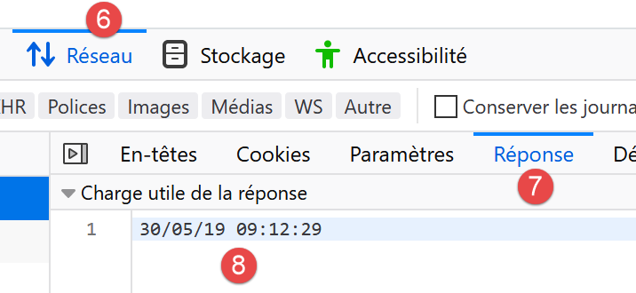
17.6.2. The client-side script
In the link section, we generated several clients and HTTP. We could use them to retrieve the text document sent by the server script [date-time-server.php]. We will not do that. As we did for the SMTP and IMAP protocols, we will use a third-party library, namely the [HttpClient] component of the Symfony [https://symfony.com/doc/master/components/http_client.html] framework.
As with the two previous libraries, we use the [Composer] tool to install the Symfony [HttpClient] component. In a Laragon [Terminal] window (see link section), type the following command:

- in [3], verify that you are in the [<laragon>/www/] folder, where <laragon> is the Laragon installation folder;
- In [4], the command [composer] installs the Symfony library [HttpClient];
- in [5], nothing is installed because the [HttpClient] library had already been installed on this machine;
- in [6-7], new folders appear in [<laragon>/www/vendor/symfony];
Instead of [5], you should have something like the following:
C:\myprograms\laragon-lite\www
? composer require symfony/http-client
Using version ^4.3 for symfony/http-client
./composer.json has been updated
Loading composer repositories with package information
Updating dependencies (including require-dev)
Package operations: 4 installs, 0 updates, 0 removals
- Installing symfony/polyfill-php73 (v1.11.0): Downloading (100%)
- Installing symfony/http-client-contracts (v1.1.1): Downloading (100%)
- Installing psr/log (1.1.0): Loading from cache
- Installing symfony/http-client (v4.3.0): Downloading (100%)
Writing lock file
Generating autoload files
Make sure the [<laragon>/www/vendor] folder is part of the [Include Path] branch of your project (see the link section):

Once this is done, we can write the [date-time-client.php] console script:

The [date-time-client.php] console script will process the following jSON and [config-date-time-client.json] files:
- line 2: the URL from the server script;
The client-side script [date-time-client.php] will be as follows:
<?php
// service customer date / time
//
// error management
//ini_set("error_reporting", E_ALL & ~ E_WARNING & ~E_DEPRECATED & ~E_NOTICE);
//ini_set("display_errors", "off");
//
// dependencies
require_once 'C:/myprograms/laragon-lite/www/vendor/autoload.php';
use Symfony\Component\HttpClient\HttpClient;
// customer configuration
const CONFIG_FILE_NAME = "config-date-time-client.json";
// we retrieve the configuration
if (!file_exists(CONFIG_FILE_NAME)) {
print "Le fichier de configuration [" . CONFIG_FILE_NAME . "] n'existe pas\n";
exit;
}
if (!$config = \json_decode(\file_get_contents(CONFIG_FILE_NAME), true)) {
print "Erreur lors de l'exploitation du fichier de configuration jSON [" . CONFIG_FILE_NAME . "]\n";
exit;
}
// create a HTTP customer
$httpClient = HttpClient::create();
try {
// query
$response = $httpClient->request('GET', $config['url']);
// answer status
$statusCode = $response->getStatusCode();
print "---Réponse avec statut : $statusCode\n";
// we retrieve the headers
print "---Entêtes de la réponse\n";
$headers = $response->getHeaders();
foreach ($headers as $type => $value) {
print "$type: " . $value[0] . "\n";
}
// retrieve the body of the reply
$content = $response->getContent();
// we display it
print "---Réponse du serveur : [$content]\n";
} catch (TypeError | RuntimeException $ex) {
// error is displayed
print "Erreur de communication avec le serveur : " . $ex->getMessage() . "\n";
exit;
}
Comments
- line 10: as we did for the previous libraries, we load the file [<laragon>/www/vendor/autoload.php];
- line 11: we declare the [HttpClient] class that we will use;
- lines 13–24: we retrieve the script configuration from the [$config] dictionary;
- line 27: we create an object of type [HttpClient];
- line 31: we request the URL from the server script using a GET command: [GET URL HTTTP/1.1]. This operation is asynchronous. Execution continues on line 33 without waiting for the response to be received;
- Line 33: The response status is requested. This status is found in the first header HTTP returned by the server. Thus, if this header is [HTTP/1.1 200 OK], the response status is 200. This operation is blocking: it does not return until the client has received the entire response from the server;
- line 37: we request the HTTP headers of the response;
- line 42: we request the document returned by the server; we know that this document is text.
- lines 45–49: if an error occurs, the error message is displayed;
When the client script is executed (Laragon must be running for the server script to be reached), the following result is displayed on the console:
We successfully retrieve the current date and time on line 8.
You might be curious to know what the client script sent to the server. To do this, we’ll use our generic TCP server (see link section):

- in [1], the utilities folder;
- in [2], the TCP server is running on port 100;
- in [3], waiting for a command entered via the keyboard;
We modify the configuration file for the [date-time-client.php] script:
{
"url": "http://localhost:100/php7/scripts-web/02/date-time-server.php"
}
This time, the client contacts the [localhost] server on port 100. Therefore, our generic TCP server will be called upon. When we run the [date-time-client.php] console script, the console of the generic TCP server changes as follows:

- to [3], the HTTP GET command generated by the client script;
- to [4], the console script signature;
- in [5], the server’s response to the client script. Note that this is not a valid HTTP response:
- there should be headers HTTP;
- followed by a blank line;
- then the text document sent to the client;
- in [6], we close the connection with the client script so that it detects it has received the entire response;
On the client script side, we have the following console output:

- in [7], what the Symfony client received;
17.6.3. The server script – version 2
By default, the functions for writing a web script are not object-oriented. On the server side, we are therefore forced to mix classes and standard functions. To achieve a more consistent coding style, we will use the [HttpFoundation] library from the Symfony framework. It has encapsulated all the classic PHP functions for a web service into a system of classes and interfaces. The library’s documentation is available at URL [https://symfony.com/doc/current/components/http_foundation.html] (May 2019).
To install the library, follow these steps in a Laragon terminal (see link section):

- [2-3]: make sure you are in the [<laragon>/www] folder;
- [4]: the command [composer] will install the [HttpFoundation] library;
- [5]: In this example, the library was already installed;
Upon first installation, you should see console logs similar to the following:
C:\myprograms\laragon-lite\www
? composer require symfony/http-foundation
Using version ^4.3 for symfony/http-foundation
./composer.json has been updated
Loading composer repositories with package information
Updating dependencies (including require-dev)
Package operations: 2 installs, 0 updates, 0 removals
- Installing symfony/mime (v4.3.0): Downloading (100%)
- Installing symfony/http-foundation (v4.3.0): Downloading (100%)
Writing lock file
Generating autoload files
The second version from the [date-time-server-2.php] web server is as follows:
<?php
// using Symfony libraries
// dependencies
require_once 'C:/myprograms/laragon-lite/www/vendor/autoload.php';
use Symfony\Component\HttpFoundation\Response;
// we set the Content-Type header
$response=new Response();
$response->headers->set("content-type","text/plain");
$response->setCharset("utf-8");
// set the content of the response
//
// send date and time
// time: number of milliseconds since 01/01/1970
// date-time display format
// d: 2-digit day
// m: 2-digit month
// y: 2-digit year
// H: hour 0.23
// i : minutes
// s: seconds
$response->setContent(date("d/m/y H:i:s", time()));
// we send the answer
$response->send();
Comments
- line 7: the [Response] class from the Symfony [HttpFoundation] library handles the entire response to the clients web service;
- line 10: creation of an instance of the [Response] class;
- line 11: specifies that the response is of type [text/plain];
- line 12: the response is UTF-8 text;
- line 25: the response document is set to what the client requested;
- line 28: the response is sent to the client;
17.6.4. The client script – version 2
The client script remains unchanged. We only modify its configuration file [config-date-time-client.json]:
The results are the same as in version 1.
17.7. A jSON data server
A web script’s response can consist of multiple data points that can be organized into arrays and objects. The script can then send these various elements within a string that the client will decode.

17.7.1. The server-side script
The [json-server.php] script uses the following [Personne] class:
<?php
namespace Modèles;
class Personne implements \JsonSerializable {
// attributes
private $nom;
private $prénom;
private $âge;
// convert associative array to object [Person]
public function setFromArray(array $assoc): Personne {
// on initialise l'objet courant avec le tableau associatif
foreach ($assoc as $attribute => $value) {
$this->$attribute = $value;
}
// result
return $this;
}
// getters and setters
public function getNom() {
return $this->nom;
}
public function getPrénom() {
return $this->prénom;
}
public function setNom($nom) {
$this->nom = $nom;
return $this;
}
public function setPrénom($prénom) {
$this->prénom = $prénom;
return $this;
}
public function getÂge() {
return $this->âge;
}
public function setÂge($âge) {
$this->âge = $âge;
return $this;
}
// toString
public function __toString(): string {
return "Personne [$this->prénom, $this->nom, $this->âge]";
}
// implements the JsonSerializable interface
public function jsonSerialize(): array {
// render an associative array with the object's attributes as keys
// this table can then be encoded as jSON
return get_object_vars($this);
}
// convert a jSON to a [Person] object
public static function jsonUnserialize(string $json): Personne {
// we create a person from the string jSON
return (new Personne())->setFromArray(json_decode($json, true));
}
}
Comments
- line 5: the class implements the PHP [JsonSerializable] interface. This requires it to implement the [jsonSerialize] method in lines 55–59. The method must return an associative array that must be serialized to jSON. When the expression [json_encode($personne)] is used, the function [json_encode] checks whether the class [Personne] implements the interface [JsonSerializable]. If so, the expression becomes [json_encode($personne→serialize())];
- lines 12–19: the class has no constructor but an initializer. The class [Personne] can then be instantiated by the expression [(new Personne())→setFromArray($array)]. There can be various types of initializers, whereas there can be only one constructor. These initializers allow for various ways of instantiating the type [(new Personne())→initialiseuri(…)];
- lines 62–65: the static function [jsonUnserialize] allows creating a [Personne] object from its string jSON;
The script [json-server.php] will be as follows:
<?php
// dependencies
require_once __DIR__ . "/Personne.php";
use \Modèles\Personne;
require_once 'C:/myprograms/laragon-lite/www/vendor/autoload.php';
use \Symfony\Component\HttpFoundation\Response;
// set the Content-Type header and the character library used
$response = new Response();
$response->headers->set("content-type", "application/json");
$response->setCharset("utf-8");
// create a Person object
$personne = (new Personne())->setFromArray([
"nom" => "de la Hûche",
"prénom" => "jean-paul",
"âge" => 27]);
// an associative table
$assoc = ["attr1" => "value1",
"attr2" => [
"prenom" => "Jean-Paul",
"nom" => "de la Hûche"
]
];
// the content of the response is jSON
$response->setContent(json_encode([$personne, $assoc]));
// reply sent
$response->send();
Comments
- lines 4-5: import the [Personne] class;
- line 11: we specify that the document will be of type [application/json]. Upon receiving this header, browsers will display the string jSON formatted rather than as plain text;
- line 12: the string jSON will contain UTF-8 characters;
- lines 15–18: an object named [Personne] is created;
- lines 20–25: a two-level associative array is created;
- line 27: the string jSON from an array is sent to the client:
- the element [$personne] will be serialized to jSON using its method [jsonSerialize];
- the element [$assoc] will be natively serialized to jSON;
If you run this server script (Laragon must be running), you will get the following response in a browser:


Comments
- in [2], the formatted response jSON;
- in [4], the raw jSON response. Note the encoding of accented characters;
- in [6], it is the content type [application/json] sent by the server that caused the browser to format it this way;
17.7.2. The client

The client [json-client.php] is configured by the following file: jSON [config-json-client.json]:
The script [json-client.php] is as follows:
<?php
// service customer jSON
//
// error management
//ini_set("error_reporting", E_ALL & ~ E_WARNING & ~E_DEPRECATED & ~E_NOTICE);
//ini_set("display_errors", "off");
//
// dependencies
require_once 'C:/myprograms/laragon-lite/www/vendor/autoload.php';
use Symfony\Component\HttpClient\HttpClient;
require_once __DIR__ . "/Personne.php";
use \Modèles\Personne;
// customer configuration
const CONFIG_FILE_NAME = "config-json-client.json";
// we retrieve the configuration
if (!file_exists(CONFIG_FILE_NAME)) {
print "Le fichier de configuration [" . CONFIG_FILE_NAME . "] n'existe pas\n";
exit;
}
if (!$config = \json_decode(\file_get_contents(CONFIG_FILE_NAME), true)) {
print "Erreur lors de l'exploitation du fichier de configuration jSON [" . CONFIG_FILE_NAME . "]\n";
exit;
}
// create a HTTP customer
$httpClient = HttpClient::create();
try {
// query
$response = $httpClient->request('GET', $config['url']);
// answer status
$statusCode = $response->getStatusCode();
print "---Réponse avec statut : $statusCode\n";
// we retrieve the headers
print "---Entêtes de la réponse\n";
$headers = $response->getHeaders();
foreach ($headers as $type => $value) {
print "$type: " . $value[0] . "\n";
}
// retrieve the jSON body of the response
list($personne, $assoc) = json_decode($response->getContent(), true);
// a person is instantiated from an array of attributes
$personne = (new Personne())->setFromArray($personne);
// server response is displayed
print "---Réponse du serveur\n";
print "$personne\n";
print "tableau=" . json_encode($assoc, JSON_UNESCAPED_UNICODE) . "\n";
} catch (TypeError | RuntimeException $ex) {
// error is displayed
print "Erreur de communication avec le serveur : " . $ex->getMessage() . "\n";
}
Comments
- lines 12-13: import the [Personne] class;
- line 30: create the HTTP client;
- line 44: decoding the jSON string sent by the server. We know that what was encoded is a two-element array containing two associative arrays;
- line 46: create an object [Personne] to display it on line 49;
- line 50: we display the second associative array. The [print] instruction cannot display arrays. Therefore, we convert this one into the string jSON. To correctly display accented characters, the second parameter must be set to [JSON_UNESCAPED_UNICODE]. We have seen that accented characters are indeed encoded in the string jSON;
Executing the client-side script yields the following results:
---Response with status: 200
---Response headers
date: Sun, 02 Jun 2019 09:56:29 GMT
server: Apache/2.4.35 (Win64) OpenSSL/1.1.0i PHP/7.2.11
x-powered-by: PHP/7.2.11
cache-control: no-cache, private
content-length: 143
connection: close
content-type: application/json
---Server response
Personne [jean-paul, de la Hûche, 27]
tableau={"attr1":"value1","attr2":{"prenom":"Jean-Paul","nom":"de la Hûche"}}
Lines 11 and 12: accented characters were retrieved correctly.
17.8. Retrieving the web service's environment variables
A server script runs in a web environment that it can access. This environment is stored in the dictionary $_SERVER, a global variable of PHP. If we use the [HttpFoundation] library, this environment will be found in the [Request→server] field, where [Request] is the HTTP request processed by the web script.
17.8.1. The server script
We are writing a server application that sends its execution environment to clients.
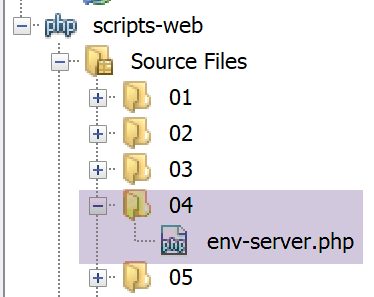
The web script [env-server.php] is as follows:
<?php
// dependencies
require_once 'C:/myprograms/laragon-lite/www/vendor/autoload.php';
use \Symfony\Component\HttpFoundation\Response;
use Symfony\Component\HttpFoundation\Request;
// we retrieve the request
$request = Request::createFromGlobals();
// we work out the answer
$response = new Response();
// the content of the response is json utf-8
$response->headers->set("content-type", "application/json");
$response->setCharset("utf-8");
// set the jSON content of the response
$response->setContent(json_encode($request->server->all()));
// reply sent
$response->send();
- line 9: retrieve the object of type [Request], which encapsulates all available information about the HTTP request received by the web script as well as its execution environment;
- lines 13-14: we will send plain text with UTF-8 characters to the client;
- line 16: the information sent to the client will be a character string obtained by serializing the [$request→server→all()] object using jSON: [$request→server] represents the web script’s execution environment. It is an object of type [ServerBag], a kind of dictionary. [$request→server→all()] is a true dictionary, containing the contents of [ServerBag];
- line 18: the information is sent;
If this script is executed from Netbeans, the browser displays the following page:
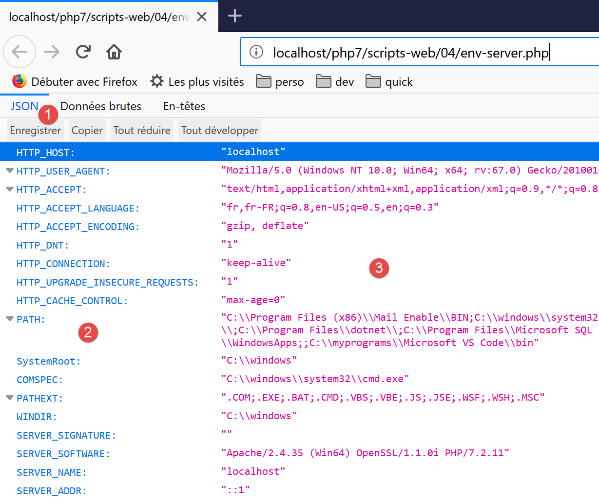
- in [2], the various keys of the environment dictionary;
- in [3], the values of these keys;
17.8.2. The client script

The client script [env-client.php] is configured by the following files: jSON and [config-env-client.json]:
The client script [env-client.php] is as follows:
<?php
// server script environment
//
// error management
//ini_set("error_reporting", E_ALL & ~ E_WARNING & ~E_DEPRECATED & ~E_NOTICE);
//ini_set("display_errors", "off");
//
// dependencies
require_once 'C:/myprograms/laragon-lite/www/vendor/autoload.php';
use Symfony\Component\HttpClient\HttpClient;
// customer configuration
const CONFIG_FILE_NAME = "config-env-client.json";
// we retrieve the configuration
if (!file_exists(CONFIG_FILE_NAME)) {
print "Le fichier de configuration [" . CONFIG_FILE_NAME . "] n'existe pas\n";
exit;
}
if (!$config = \json_decode(\file_get_contents(CONFIG_FILE_NAME), true)) {
print "Erreur lors de l'exploitation du fichier de configuration jSON [" . CONFIG_FILE_NAME . "]\n";
exit;
}
// create a HTTP customer
$httpClient = HttpClient::create();
try {
// make a request to the server
$response = $httpClient->request('GET', $config['url']);
// answer status
$statusCode = $response->getStatusCode();
print "---Réponse avec statut : $statusCode\n";
// we retrieve the headers
print "---Entêtes de la réponse\n";
$headers = $response->getHeaders();
foreach ($headers as $type => $value) {
print "$type: " . $value[0] . "\n";
}
// server response is displayed
print "---Réponse du serveur\n";
$env = json_decode($response->getContent());
foreach ($env as $key => $value) {
print "[$key]=>$value\n";
}
} catch (TypeError | RuntimeException $ex) {
// error is displayed
print "Erreur de communication avec le serveur : " . $ex->getMessage() . "\n";
}
Comments
- line 42: deserialize the server's response jSON. This returns an associative array;
- lines 43–45: display all values in this associative array;
The following console output is obtained:
---Answer with status: 200
---Response headers
date: Sun, 02 Jun 2019 17:35:50 GMT
server: Apache/2.4.35 (Win64) OpenSSL/1.1.0i PHP/7.2.11
x-powered-by: PHP/7.2.11
cache-control: no-cache, private
content-length: 1505
connection: close
content-type: application/json
---Server response
[HTTP_HOST]=>localhost
[HTTP_USER_AGENT]=>Symfony HttpClient/Curl
[HTTP_ACCEPT_ENCODING]=>deflate, gzip
[PATH]=>C:\Program Files (x86)\Mail Enable\BIN;C:\windows\system32;C:\windows;C:\windows\System32\Wbem;C:\windows\System32\WindowsPowerShell\v1.0\;C:\windows\System32\OpenSSH\;C:\Program Files\dotnet\;C:\Program Files\Microsoft SQL Server\130\Tools\Binn\;C:\Program Files (x86)\Mail Enable\BIN64;C:\Users\serge\AppData\Local\Microsoft\WindowsApps;;C:\myprograms\Microsoft VS Code\bin
[SystemRoot]=>C:\windows
[COMSPEC]=>C:\windows\system32\cmd.exe
[PATHEXT]=>.COM;.EXE;.BAT;.CMD;.VBS;.VBE;.JS;.JSE;.WSF;.WSH;.MSC
[WINDIR]=>C:\windows
[SERVER_SIGNATURE]=>
[SERVER_SOFTWARE]=>Apache/2.4.35 (Win64) OpenSSL/1.1.0i PHP/7.2.11
[SERVER_NAME]=>localhost
[SERVER_ADDR]=>::1
[SERVER_PORT]=>80
[REMOTE_ADDR]=>::1
[DOCUMENT_ROOT]=>C:/myprograms/laragon-lite/www
[REQUEST_SCHEME]=>http
[CONTEXT_PREFIX]=>
[CONTEXT_DOCUMENT_ROOT]=>C:/myprograms/laragon-lite/www
[SERVER_ADMIN]=>admin@example.com
[SCRIPT_FILENAME]=>C:/myprograms/laragon-lite/www/php7/scripts-web/04/env-server.php
[REMOTE_PORT]=>63744
[GATEWAY_INTERFACE]=>CGI/1.1
[SERVER_PROTOCOL]=>HTTP/1.1
[REQUEST_METHOD]=>GET
[QUERY_STRING]=>
[REQUEST_URI]=>/php7/scripts-web/04/env-server.php
[SCRIPT_NAME]=>/php7/scripts-web/04/env-server.php
[PHP_SELF]=>/php7/scripts-web/04/env-server.php
[REQUEST_TIME_FLOAT]=>1559496950.644
[REQUEST_TIME]=>1559496950
Here is the meaning of some of the variables (for Windows. On Linux, they would be different):
The value xxx of the header HTTP [Host: xxx] sent by the client | |
the value xxx of the HTTP [User_Agent: xxx] header sent by the client | |
the value xxx of the HTTP [Accept-Encoding: xxx] header sent by the client | |
the path to the executables on the machine where the server script is running | |
the path to the DOS command interpreter | |
the extensions of executable files | |
the Windows installation folder | |
the web server signature. Nothing here. | |
the type of web server | |
The Internet name of the web server machine | |
the web server's listening port | |
the IP address of the web server machine, here 127.0.0.1 | |
the client's address. Here, the client was on the same machine as the server. | |
the client's communication port | |
the root of the document tree served by the web server | |
the TCP protocol of the request URL http://localhost/php7/… | |
the email address of the web server administrator | |
the full path to the server script | |
the port from which the client made its request | |
the version version of the HTTP protocol used by the web server | |
the HTTP command used by the client. There are four: GET, POST, PUT, DELETE | |
the parameters sent with a request GET /url?parameters | |
the URL requested by the client. If the browser requests the URL http://machine[:port]/uri, we will have REQUEST_URI=uri | |
$_SERVER['SCRIPT_FILENAME']=$_SERVER['DOCUMENT_ROOT'].$_SERVER['SCRIPT_NAME'] |
17.9. Server retrieval of parameters sent by a client
17.9.1. Introduction
In the HTTP protocol, a client has two methods for passing parameters to the WEB server:
- it requests the URL service in the form
GET url?param1=val1¶m2=val2¶m3=val3… HTTP/1.0
where the valid values must first be encoded so that certain reserved characters are replaced by their hexadecimal values;
- it requests the URL from the service in the form
POST url HTTP/1.0
then, among the headers sent to the server, includes the following header:
The rest of the headers sent by the client end with a blank line. It can then send its data in the form
where the values vali must, as with the GET method, be encoded beforehand. The number of characters sent to the server must be N, where N is the value declared in the header
The PHP script of the web service that retrieves the previous parami parameters sent by the client obtains their values from the array:
- $_GET["parami"] for a request GET;
- $_POST["parami"] for a command POST;
this applies to the basic functions of PHP. If the [HttpFoundation] library is used, these parameters will be found in:
- [Request]->query->get('parami') for a command GET;
- [Request]->request->get('parami') for a command POST;
where [Request] represents all the information about the request received by the web script;
17.9.2. The client GET – version 1

The clients scripts are configured by the following jSON [config-parameters-client.json] file:
- line 1: the URL of the target web script for clients and GET;
- line 2: the URL of the target web script for the client POST;
clients and GET send three parameters ([nom, prenom, age]) to the server. The client [parameters-get-client.php] is as follows:
<?php
// client GET of a web server
//
// error management
//ini_set("error_reporting", E_ALL & ~ E_WARNING & ~E_DEPRECATED & ~E_NOTICE);
//ini_set("display_errors", "off");
//
// dependencies
require_once 'C:/myprograms/laragon-lite/www/vendor/autoload.php';
use Symfony\Component\HttpClient\HttpClient;
// customer configuration
const CONFIG_FILE_NAME = "config-parameters-client.json";
// we retrieve the configuration
if (!file_exists(CONFIG_FILE_NAME)) {
print "Le fichier de configuration [" . CONFIG_FILE_NAME . "] n'existe pas\n";
exit;
}
if (!$config = \json_decode(\file_get_contents(CONFIG_FILE_NAME), true)) {
print "Erreur lors de l'exploitation du fichier de configuration jSON [" . CONFIG_FILE_NAME . "]\n";
exit;
}
// create a HTTP customer
$httpClient = HttpClient::create();
try {
// prepare the parameters
list($prenom, $nom, $age) = array("jean-paul", "de la hûche", 45);
// information is encoded
$parameters = "prenom=" . urlencode($prenom) .
"&nom=" . urlencode($nom) .
"&age=$age”;
// query
$response = $httpClient->request('GET', $config['url-get'] . "?$parameters");
// answer status
$statusCode = $response->getStatusCode();
print "---Réponse avec statut : $statusCode\n";
// we retrieve the headers
print "---Entêtes de la réponse\n";
$headers = $response->getHeaders();
foreach ($headers as $type => $value) {
print "$type: " . $value[0] . "\n";
}
// server response is displayed
print "---Réponse du serveur [" . $response->getContent() . "]\n";
} catch (TypeError | RuntimeException $ex) {
// error is displayed
print "Erreur de communication avec le serveur : " . $ex->getMessage() . "\n";
}
Comments
- lines 33-35: encoding of parameters sent to the server. The [$prenom, $nom] parameters, which may contain UTF-8 characters, are encoded using the [urlencode] function. All non-alphanumeric characters (as defined by relational expressions) are replaced by %xx, where xx is the hexadecimal value of the character. Spaces are replaced by the + sign;
- line 37: the requested URL is $URL?$parameters, where $parameters is in the form lastname=val1&firstname=val2&age=val3;
- line 48: the client will simply display the client’s response;
You might be curious to see what the server receives during a configured GET request. To do this, we launch our generic server [RawTcpServer] on port 100 of the local machine from a Laragon terminal (see link section):

Verify that in [4], you are indeed in the utilities folder.
We modify the jSON [parameters-get-client.json] file, which configures clients, GET, and POST:
{
"url-get": "http://localhost:100/php7/scripts-web/05/parameters-server.php",
"url-post": "http://localhost/php7/scripts-web/05/parameters-server.php"
}
- Line 2: We have changed the web server port. Therefore, [RawTcpServer] will be contacted;
We run the client. In the [RawTcpServer] window, we obtain the following information:
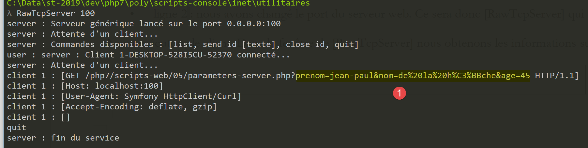
- In [1], the configured GET command sent by the client. We can clearly see the encoding of certain characters;
17.9.3. The GET / POST server

The server script [parameters-server.php] is as follows:
<?php
// dependencies
require_once 'C:/myprograms/laragon-lite/www/vendor/autoload.php';
use \Symfony\Component\HttpFoundation\Response;
use Symfony\Component\HttpFoundation\Request;
// we retrieve the request
$request = Request::createFromGlobals();
// retrieve query parameters
$getParameters = $request->query->all();
$bodyParameters = $request->request->all();
// we work out the answer
$response = new Response();
// the content of the answer is utf-8 text
$response->headers->set("content-type", "application/json");
$response->setCharset("utf-8");
// response content - an array encoded in jSON
$response->setContent(json_encode([
"method" => $request->getMethod(),
"uri" => $request->getRequestUri(),
"getParameters" => $getParameters,
"bodyParameters" => $bodyParameters
], JSON_UNESCAPED_UNICODE));
// reply sent
$response->send();
Comments
- line 9: creation of the [Request] object for the web script. This object encapsulates all the information that the web script has received from the client;
- Line 11: The object [Request→query] is of type [ParameterBag] and contains the parameters for a customer’s potential GET operation. The expression [Request→query→get(«X»)] retrieves the parameter named X from the parameters of GET [nom=val1&prenom=val2&age=val3]. The expression [Request→query→all()] retrieves the parameter dictionary of GET;
- Line 12: The [Request→request] object is of type [ParameterBag] and contains the parameters sent as a document from the client to the server. These parameters are also said to be uploaded because they belong to a document that the client sends to the server. The expression [Request→request→get(«X»)] retrieves the parameter named X from the uploaded parameters [nom=val1&prenom=val2&age=val3]. The expression [Request→request→all()] retrieves the dictionary of uploaded parameters;
- lines 17–18: the client is informed that it will receive jSON encoded in UTF-8;
- lines 20–25: the server returns to the client all the parameters it received, the type of operation ([GET / POST / …]) performed by the client, and the requested URI. This method is obtained by the expression [$request→getMethod()]. The document sent to the client is the string jSON of an associative array, some of whose values are themselves associative arrays. The parameter [JSON_UNESCAPED_UNICODE] specifies that Unicode characters (such as accented characters, for example) should be sent as-is and not encoded;
- line 27: the response is sent to the client;
Executing the client script yields the following results:
- line 10:
- [method]: the method is GET;
- [uri]: we see the url-encoded parameters of the GET request in the requested URI;
- [getParameters]: the parameter array for GET;
- [bodyParameters]: the table of uploaded parameters: it is empty;
17.9.4. The client GET – version 2
In the previous version of the client script, we manually encoded the parameters sent to the server ourselves, for educational purposes. The [HttpClient] object can do this work on its own. Here is the following [parameters-get-client-2.php] script:
<?php
// client GET of a web server
//
// error management
//ini_set("error_reporting", E_ALL & ~ E_WARNING & ~E_DEPRECATED & ~E_NOTICE);
//ini_set("display_errors", "off");
//
// dependencies
require_once 'C:/myprograms/laragon-lite/www/vendor/autoload.php';
use Symfony\Component\HttpClient\HttpClient;
// customer configuration
const CONFIG_FILE_NAME = "config-parameters-client.json";
// we retrieve the configuration
if (!file_exists(CONFIG_FILE_NAME)) {
print "Le fichier de configuration [" . CONFIG_FILE_NAME . "] n'existe pas\n";
exit;
}
if (!$config = \json_decode(\file_get_contents(CONFIG_FILE_NAME), true)) {
print "Erreur lors de l'exploitation du fichier de configuration jSON [" . CONFIG_FILE_NAME . "]\n";
exit;
}
// create a HTTP customer
$httpClient = HttpClient::create();
try {
// prepare the parameters
list($prenom, $nom, $age) = array("jean-paul", "de la hûche", 45);
// make a request to the server
$response = $httpClient->request('GET', $config['url-get'],
["query" => [
"prenom" => $prenom,
"nom" => $nom,
"age" => $age
]]);
// answer status
$statusCode = $response->getStatusCode();
print "---Réponse avec statut : $statusCode\n";
// we retrieve the headers
print "---Entêtes de la réponse\n";
$headers = $response->getHeaders();
foreach ($headers as $type => $value) {
print "$type: " . $value[0] . "\n";
}
// server response is displayed
print "---Réponse du serveur [" . $response->getContent() . "]\n";
} catch (TypeError | RuntimeException $ex) {
// error is displayed
print "Erreur de communication avec le serveur : " . $ex->getMessage() . "\n";
}
Comments
- lines 33-37: adding parameters to the GET request from line 32. The [HttpClient] object will handle the encoding of the URL itself;
17.9.5. The POST client
A HTTP client sends the following text sequence to the web server: HTTP headers, empty line, document. In the previous client, this sequence was as follows:
There was no document. There is another way to transmit parameters, known as the POST method. In this case, the text sequence sent to the web server is as follows:
This time, the parameters that were included in the headers for the GET client are part of the document sent after the headers in the POST client.
The script for the POST [parameters-postclient.php] client is as follows:
<?php
// client POST of a web server
//
// error management
//ini_set("error_reporting", E_ALL & ~ E_WARNING & ~E_DEPRECATED & ~E_NOTICE);
//ini_set("display_errors", "off");
//
// dependencies
require_once 'C:/myprograms/laragon-lite/www/vendor/autoload.php';
use Symfony\Component\HttpClient\HttpClient;
// customer configuration
const CONFIG_FILE_NAME = "config-parameters-client.json";
// we retrieve the configuration
if (!file_exists(CONFIG_FILE_NAME)) {
print "Le fichier de configuration [" . CONFIG_FILE_NAME . "] n'existe pas\n";
exit;
}
if (!$config = \json_decode(\file_get_contents(CONFIG_FILE_NAME), true)) {
print "Erreur lors de l'exploitation du fichier de configuration jSON [" . CONFIG_FILE_NAME . "]\n";
exit;
}
// create a HTTP customer
$httpClient = HttpClient::create();
try {
// prepare the parameters
list($prenom, $nom, $age) = array("jean-paul", "de la hûche", 45);
// make a request to the server
$response = $httpClient->request('POST', $config['url-post'],
["body" => [
"prenom" => $prenom,
"nom" => $nom,
"age" => $age
]]);
// answer status
$statusCode = $response->getStatusCode();
print "---Réponse avec statut : $statusCode\n";
// we retrieve the headers
print "---Entêtes de la réponse\n";
$headers = $response->getHeaders();
foreach ($headers as $type => $value) {
print "$type: " . $value[0] . "\n";
}
// server response is displayed
print "---Réponse du serveur [" . $response->getContent() . "]\n";
} catch (TypeError | RuntimeException $ex) {
// error is displayed
print "Erreur de communication avec le serveur : " . $ex->getMessage() . "\n";
}
- line 32: we now have a HTTP request of type POST;
- lines 33–37: the parameters of POST are called the body of the POST request: this is the document sent by the client to the server. Here, three parameters are sent [nom, prenom, age];
- line 48: the server’s response jSON is displayed;
The results of executing the client script are as follows:
- line 10: the method is [Post] and the parameters are of type [bodyParameters]. There are no [getParameters] parameters, as shown by [uri];
You might be curious to see what the server receives during a POST request. To do this, we start our generic [RawTcpServer] server on port 100 of the local machine from a Laragon terminal (see the "Link" section):
Verify that in [4], you are indeed in the utilities folder.
We modify the jSON [config-parameters-client.json] file that configures the POST client:
{
"url-get": "http://localhost:100/php7/scripts-web/05/parameters-server.php",
"url-post": "http://localhost:100/php7/scripts-web/05/parameters-server.php"
}
- Line 3: We have changed the web server port. Therefore, [RawTcpServer] will be contacted;
We run the client. In the [RawTcpServer] window, we get the following information:

- in [6], the command POST;
- In [7]: the header HTTP [Content-Length] specifies the number of bytes in the document that the client will send to the server. The header HTTP [Content-Type] specifies the nature of this document. The type [application/x-www-form-urlencoded] denotes url-encoded text;
- in [8], the empty line that marks the end of the headers HTTP and the start of the 44-byte document. What the screenshot does not show is the document itself. This is the url-encoded string of parameters: [prenom=jean-paul&nom=de+la+h%C3%BBche&age=45]. The reader can verify that it indeed has 44 characters;
17.9.6. A mixed POST client
In a POST, you can mix the parameters encoded in the URL with those encoded in the document sent by the client after the HTTP headers. Here is an example of a [parameters-mixte-postclient.php]:
<?php
// client POST of a web server
//
// error management
//ini_set("error_reporting", E_ALL & ~ E_WARNING & ~E_DEPRECATED & ~E_NOTICE);
//ini_set("display_errors", "off");
//
// dependencies
require_once 'C:/myprograms/laragon-lite/www/vendor/autoload.php';
use Symfony\Component\HttpClient\HttpClient;
// customer configuration
const CONFIG_FILE_NAME = "config-parameters-client.json";
// we retrieve the configuration
if (!file_exists(CONFIG_FILE_NAME)) {
print "Le fichier de configuration [" . CONFIG_FILE_NAME . "] n'existe pas\n";
exit;
}
if (!$config = \json_decode(\file_get_contents(CONFIG_FILE_NAME), true)) {
print "Erreur lors de l'exploitation du fichier de configuration jSON [" . CONFIG_FILE_NAME . "]\n";
exit;
}
// create a HTTP customer
$httpClient = HttpClient::create();
try {
// prepare the parameters
list($prenom, $nom, $age) = array("jean-paul", "de la hûche", 45);
// make a request to the server
$response = $httpClient->request('POST', $config['url-post'],
[
// document parameters (body)
"body" => [
"prenom" => $prenom,
"nom" => $nom,
"age" => $age
],
// parameters of URL (query)
"query" => [
"prenom2" => $prenom,
"nom2" => $nom,
"age2" => $age
]]);
// answer status
$statusCode = $response->getStatusCode();
print "---Réponse avec statut : $statusCode\n";
// we retrieve the headers
print "---Entêtes de la réponse\n";
$headers = $response->getHeaders();
foreach ($headers as $type => $value) {
print "$type: " . $value[0] . "\n";
}
// server response is displayed
print "---Réponse du serveur [" . $response->getContent() . "]\n";
} catch (TypeError | RuntimeException $ex) {
// error is displayed
print "Erreur de communication avec le serveur : " . $ex->getMessage() . "\n";
}
Comments
- line 32: a POST request;
- lines 40-45: url-encoded parameters in the URL;
- lines 35-39: url-encoded parameters in the body (document) of the request;
Upon execution, the following console results are obtained:
- line 10: we can see that the server was able to retrieve both types of parameters;
17.9.7. A mixed GET client
We try to do the same thing as before with a GET request. The [parameters-mixte-get-client.php] script is as follows:
<?php
// client POST of a web server
//
// error management
//ini_set("error_reporting", E_ALL & ~ E_WARNING & ~E_DEPRECATED & ~E_NOTICE);
//ini_set("display_errors", "off");
//
// dependencies
require_once 'C:/myprograms/laragon-lite/www/vendor/autoload.php';
use Symfony\Component\HttpClient\HttpClient;
// customer configuration
const CONFIG_FILE_NAME = "config-parameters-client.json";
// we retrieve the configuration
if (!file_exists(CONFIG_FILE_NAME)) {
print "Le fichier de configuration [" . CONFIG_FILE_NAME . "] n'existe pas\n";
exit;
}
if (!$config = \json_decode(\file_get_contents(CONFIG_FILE_NAME), true)) {
print "Erreur lors de l'exploitation du fichier de configuration jSON [" . CONFIG_FILE_NAME . "]\n";
exit;
}
// create a HTTP customer
$httpClient = HttpClient::create();
try {
// prepare the parameters
list($prenom, $nom, $age) = array("jean-paul", "de la hûche", 45);
// make a request to the server
$response = $httpClient->request('GET', $config['url-post'],
[
// document parameters (body)
"body" => [
"prenom" => $prenom,
"nom" => $nom,
"age" => $age
],
// parameters of URL (query)
"query" => [
"prenom2" => $prenom,
"nom2" => $nom,
"age2" => $age
]]);
// answer status
$statusCode = $response->getStatusCode();
print "---Réponse avec statut : $statusCode\n";
// we retrieve the headers
print "---Entêtes de la réponse\n";
$headers = $response->getHeaders();
foreach ($headers as $type => $value) {
print "$type: " . $value[0] . "\n";
}
// server response is displayed
print "---Réponse du serveur [" . $response->getContent() . "]\n";
} catch (TypeError | RuntimeException $ex) {
// error is displayed
print "Erreur de communication avec le serveur : " . $ex->getMessage() . "\n";
}
Comments
- line 32: a POST request;
- lines 40–45: url-encoded parameters in the URL;
- lines 35–39: url parameters encoded in the body (document) of the request;
Upon execution, the following console results are obtained:
- Line 10: We can see that the server did not receive any url-encoded parameters in the document sent by the client. When we look at the headers sent by the client, we see that it did indeed send a 44-character document, but the server did not process it;
So, which method should be used to send information to the server?
- The [GET URL?param1=val1¶m2=val2&…] method uses a configured URL that can serve as a link. This is its main advantage: the user can save such links to their bookmarks;
- In other applications, you may not want to display the parameters sent to the server in a URL. For security reasons, for example. In that case, we will use a [POST] method and place the url-encoded parameters in a document sent to the server;
17.10. Web Session Management
In the previous client/server examples, the process was as follows:
- the client opens a connection to port 80 on the web server machine;
- it sends the text sequence: HTTP headers, blank line, [document];
- In response, the server sends a sequence of the same type;
- the server closes the connection to the client;
- the client closes the connection to the server;
If the same client makes a new request to the web server shortly thereafter, a new connection is established between the client and the server. The server cannot tell whether the connecting client has visited before or if this is a first request. Between connections, the server “forgets” its client. For this reason, the HTTP protocol is said to be a stateless protocol. However, it is useful for the server to remember its clients. Thus, if an application is secure, the client will send the server a username and password to authenticate itself. If the server “forgets” its client between connections, the client would have to authenticate itself with every new connection, which is not feasible.
To track a client, the server proceeds as follows: when a client makes an initial request, the server includes an identifier in its response that the client must then send back with every new request. Thanks to this identifier, which is unique to each client, the server can recognize a client. It can then manage a cache for that client in the form of a cache uniquely associated with the client’s identifier.
Technically, this is how it works:
- in the response to a new client, the server includes the header HTTP Set-Cookie: MotClé=Identifier. It does this only on the first request;
- in subsequent requests, the client will send its identifier via the header HTTP Cookie: MotClé=Identifier so that the server can recognize it;
One might wonder how the server knows it is dealing with a new client rather than a returning one. It is the presence of the HTTP Cookie header in the client’s HTTP headers that tells it. For a new client, this header is absent.
The set of connections from a given client is called a session.
17.10.1. The [php.ini] configuration file
For session management to work correctly with PHP, you must verify that it is properly configured. On Windows, its configuration file is php.ini. Depending on the execution context (console, web), the [php.ini] configuration file must be located in different folders. To determine these, use the following script:
Line 4: The phpinfo function provides information about the PHP interpreter executing the script. In particular, it provides the path to the [php.ini] configuration file being used.
We have already used this script in a console environment (see the "link" section). In a web environment, we get the following result:
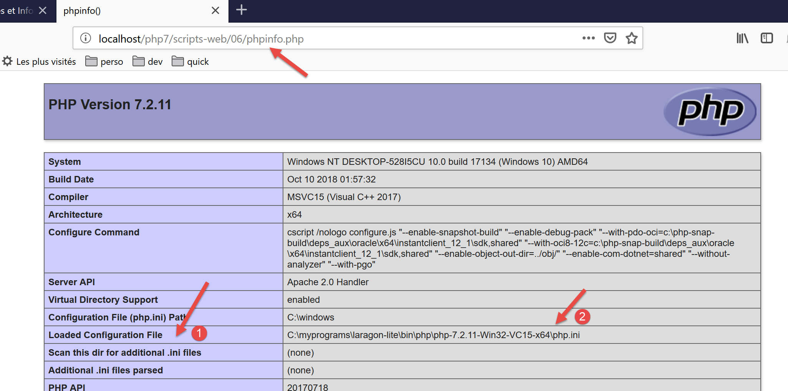
- In [1-2], the [php.ini] file configures the web script interpreter. This file contains a session section:
- line 2: client session data is saved to a file;
- line 3: the folder where session data is saved. If this folder does not exist, no error is reported and session management does not work;
- lines 4–6: indicate that the session ID is managed by the HTTP Set-Cookie and Cookie headers;
- line 7: the Set-Cookie header will be in the form Set-Cookie: PHPSESSID=identifiant_de_session;
- line 8: A client session is not started automatically. The server script must explicitly request it using the session_start() function;
- line 9: the session cookie is valid as long as the client browser has not been closed;
- line 10: the path for which the session cookie must be sent back. If [session.cookie_path = /xxx], then every time the browser requests a URL of type [/xxx/yyy/zzz], it must send back the cookie. Here, the path [/] indicates that the cookie must be sent back for any URL on the site;
- line 13: certain session objects must be serialized in order to be stored in a file. PHP handles this serialization/deserialization using the [serialize / unserialize] functions;
- line 16: lifetime beyond which session objects stored in the backup file are considered obsolete;
- line 19: session lifetime. After this period, a new session is created and the objects saved in the previous session are lost;
17.10.2. Example 1
17.10.2.1. The server

Session ID management is transparent to a web service. This ID is managed by the web server. A web service accesses the client’s session via the session_start() statement. From this point on, the web service can read/write data to the client’s session via the $_SESSION dictionary. If the [HttpFoundation] library is used, the session is available via the [Request→getSession] expression.
The following code [session-server.php] demonstrates session-based management of three counters. With each new request, the web script increments these counters and stores them in the session so they can be retrieved during the next request.
<?php
// dependencies
require_once 'C:/myprograms/laragon-lite/www/vendor/autoload.php';
use \Symfony\Component\HttpFoundation\Response;
use Symfony\Component\HttpFoundation\Request;
use Symfony\Component\HttpFoundation\Session\Session;
//
// we retrieve the request
$request = Request::createFromGlobals();
// session
$session = new Session();
$session->start();
// three counters are retrieved from the session
if ($session->has("N1")) {
// n1 counter increment
$session->set("N1", (int) $session->get("N1") + 1);
} else {
// counter N1 is not in session - create it
$session->set("N1", 0);
}
if ($session->has("N2")) {
// n2 counter increment
$session->set("N2", (int) $session->get("N2") + 1);
} else {
// counter N2 is not in session - create it
$session->set("N2", 10);
}
if ($session->has("N3")) {
// n3 counter increment
$session->set("N3", (int) $session->get("N3") + 1);
} else {
// counter N3 is not in session - create it
$session->set("N3", 100);
}
// we work out the answer
$response = new Response();
// the content of the answer is utf-8 text
$response->headers->set("content-type", "application/json");
$response->setCharset("utf-8");
// the answer will be the jSON of an array containing the three counters
$response->setContent(json_encode([
"N1" => $session->get("N1"),
"N2" => $session->get("N2"),
"N3" => $session->get("N3")]));
// reply sent
$response->send();
- line 10: the [$request] object encapsulates all the information about the request received by the web script;
- lines 12-13: a session is created and activated. The [Session] object encapsulates the session data corresponding to the session cookie sent by the client. If the client did not send such a cookie, then no data is stored in [Session]. The web script will include the header HTTP [Set-Cookie : PHPSESSID=xxx] in its first response. In subsequent requests, the client will send the header HTTP [Cookie : PHPSESSID=xxx] to indicate the session whose content it wants to use. A session is a client’s memory;
- line 15: we check if the session has a key named [N1]. This will be the name of our first counter. If not (line 20), we assign it the value 0 and store it in the session. If so (line 23), we:
- retrieve it from the session;
- increment its value by 1;
- put it back into the session;
- lines 22–35: do the same for the other two counters, N2 and N3;
- lines 36–40: prepare a response of the type [application/json];
- lines 42–45: the response will be the string jSON from an array containing the three counters;
- line 48: send the response to the client;
In the client/server relationship, management of the client session on the server depends on both parties, the client and the server:
- the server is responsible for sending an identifier to the client upon its first request
- the client is responsible for sending this identifier back with each new request. If it does not do so, the server will assume it is a new client and generate a new identifier for a new session.
Results
We use a web browser as the client. By default (actually, by configuration), the browser does indeed send back to the server the session identifiers that the server sends to it. As requests are made, the browser will receive the three counters sent by the server and will see their values increment.

- In [2], the first request to the web service;
- in [4], the fourth request shows that the counters have indeed been incremented. The counter values are indeed stored over the course of the requests;
Let’s use developer mode to view the HTTP headers exchanged between the server and the client. We close Firefox to end the current session with the server, reopen it, and enable developer mode (F12). This will clear the browser’s current session, causing it to start a new one. We request the [session-server.php] service:

In [5], we see the session ID sent by the server in its response to the client’s first request. It uses the HTTP Set-Cookie header.
Let’s make a new request by refreshing (F5) the page in the web browser:

Here, we’ll notice two things:
- In [11], the web browser sends back the session ID with the HTTP Cookie header.
- In [12], the web service no longer includes this identifier in its response. It is now the client's responsibility to include it in every request.
17.10.2.2. The client
We are now writing a client-side script based on the previous server-side script. In its session management, it must behave like a web browser:
- in the server’s response to its first request, it must find the session identifier that the server sends it. It knows it will find it in the HTTP Set-Cookie header.
- For each subsequent request, it must send the identifier it received back to the server. It will do so using the HTTP Cookie header.

The [session-client] client is configured by the following jSON [config-session-client.json] file:
The client code for [session-client] is as follows:
<?php
// session management
//
// error management
//ini_set("error_reporting", E_ALL & ~ E_WARNING & ~E_DEPRECATED & ~E_NOTICE);
//ini_set("display_errors", "off");
//
// dependencies
require_once 'C:/myprograms/laragon-lite/www/vendor/autoload.php';
use Symfony\Component\HttpClient\HttpClient;
// customer configuration
const CONFIG_FILE_NAME = "config-session-client.json";
// we retrieve the configuration
if (!file_exists(CONFIG_FILE_NAME)) {
print "Le fichier de configuration [" . CONFIG_FILE_NAME . "] n'existe pas\n";
exit;
}
if (!$config = \json_decode(\file_get_contents(CONFIG_FILE_NAME), true)) {
print "Erreur lors de l'exploitation du fichier de configuration jSON [" . CONFIG_FILE_NAME . "]\n";
exit;
}
// create a HTTP customer
$httpClient = HttpClient::create();
try {
// we'll make 10 requests
for ($i = 0; $i < 10; $i++) {
// make a request to the server
if (!isset($sessionCookie)) {
// no session
$response = $httpClient->request('GET', $config['url']);
} else {
// with session
$response = $httpClient->request('GET', $config['url'],
["headers" => ["Cookie" => $sessionCookie]]);
}
// answer status
$statusCode = $response->getStatusCode();
print "---Réponse avec statut : $statusCode\n";
// we retrieve the headers
print "---Entêtes de la réponse\n";
$headers = $response->getHeaders();
foreach ($headers as $type => $value) {
print "$type: " . $value[0] . "\n";
}
// retrieve the session cookie if it exists
if (isset($headers["set-cookie"])) {
// session cookie ?
foreach ($headers["set-cookie"] as $cookie) {
$match = [];
$match = preg_match("/^PHPSESSID=(.+?);/", $cookie, $champs);
if ($match) {
$sessionCookie = "PHPSESSID=" . $champs[1];
}
}
}
}
// the jSON server response is displayed
print "---Réponse du serveur : {$response->getContent()}\n";
} catch (TypeError | RuntimeException $ex) {
// error is displayed
print "Erreur de communication avec le serveur : " . $ex->getMessage() . "\n";
}
Comments
- line 27: creation of the client HTTP;
- line 30: we will send the same request 10 times to the [session-server.php] server;
- line 32: the variable [$sessionCookie] will be set to the value of the header HTTP [Set-Cookie] received by the client;
- lines 32–34: if this variable does not exist, it means the session has not yet started. The command [GET] is sent without the header [Cookie];
- lines 35–38: otherwise, the session has started, and the command [GET] is sent with the header [Cookie]. The value of this header will be [$sessionCookie];
- line 50: if the header [Set-Cookie] is among the received HTTP headers, then we look for the session cookie;
- line 52: the web server may send multiple [Set-Cookie] headers. The session cookie is just one of them. In our example, it has the specific format [PHPSESSID=xxx;];
- lines 53–57: we use a regular expression to find the session cookie;
- line 62: once the 10 requests have been made, we display the server’s last response, jSON;
Results
Executing the client script causes the following to be displayed in the console: Netbeans:
- Line 8: In its first response, the server sends the session ID. In subsequent responses, it no longer sends it;
- line 41: the three counters [N1, N2, N3] have indeed been incremented 9 times. During request #1, they were reset to zero;
The following example shows that you can also save the values of an array or an object in the session.
17.10.3. Example 2
17.10.3.1. The server

We will place a [Personne] object in the session. The definition of this class is as follows:
<?php
namespace Modèles;
class Personne implements \JsonSerializable {
// attributes
private $nom;
private $prénom;
private $âge;
// convert associative array to object [Person]
public function setFromArray(array $assoc): Personne {
// on initialise l'objet courant avec le tableau associatif
foreach ($assoc as $attribute => $value) {
$this->$attribute = $value;
}
// result
return $this;
}
// getters and setters
public function getNom() {
return $this->nom;
}
public function getPrénom() {
return $this->prénom;
}
public function setNom($nom) {
$this->nom = $nom;
return $this;
}
public function setPrénom($prénom) {
$this->prénom = $prénom;
return $this;
}
public function getÂge() {
return $this->âge;
}
public function setÂge($âge) {
$this->âge = $âge;
return $this;
}
// toString
public function __toString(): string {
return "Personne [$this->prénom, $this->nom, $this->âge]";
}
// implements the JsonSerializable interface
public function jsonSerialize(): array {
// render an associative array with the object's attributes as keys
// this table can then be encoded as jSON
return get_object_vars($this);
}
// conversion of a jSON to a [Person] object
public static function jsonUnserialize(string $json): Personne {
// we create a person from the string jSON
return (new Personne())->setFromArray(json_decode($json, true));
}
}
The server script will be as follows:
<?php
// dependencies
require_once 'C:/myprograms/laragon-lite/www/vendor/autoload.php';
use \Symfony\Component\HttpFoundation\Response;
use \Symfony\Component\HttpFoundation\Request;
use \Symfony\Component\HttpFoundation\Session\Session;
require_once __DIR__ . "/Personne.php";
use \Modèles\Personne;
//
// retrieve the current query
$request = Request::createFromGlobals();
// session
$session = new Session();
$session->start();
// retrieve various data from the session
// table
if ($session->has("tableau")) {
// the array is in the session - all its values are incremented
$tableau = $session->get("tableau");
for ($i = 0; $i < count($tableau); $i++) {
$tableau[$i] += 1;
}
// put the table back in the session
$session->set("tableau", $tableau);
} else {
// the array is not in the session - we create it
$tableau = [0, 10, 100];
// we put it in the session
$session->set("tableau", $tableau);
}
// dictionary
if ($session->has("assoc")) {
// [assoc] is in the session - all its elements are incremented
$assoc = $session->get("assoc");
foreach ($assoc as $key => $value) {
$assoc[$key] = $value + 1;
}
// put $assoc in the session
$session->set("assoc", $assoc);
} else {
// [assoc] is not in the session - we create it
$assoc = ["un" => 0, "deux" => 10, "trois" => 100];
// put $assoc in the session
$session->set("assoc", $assoc);
}
// object Person
if ($session->has("personne")) {
// [person] is in the session - his age is incremented
$personne = $session->get("personne");
$personne->setÂge($personne->getÂge() + 1);
} else {
// [person] is not in the session - we create it
$personne = (new Personne())->setFromArray(
["prénom" => "Léonard", "nom" => "Hûche", "âge" => 0]);
// put $personne in the session
$session->set("personne", $personne);
}
// we work out the answer
$response = new Response();
// the content of the response is jSON utf-8
$response->headers->set("content-type", "application/json");
$response->setCharset("utf-8");
$response->setContent(json_encode([
"tableau" => $tableau,
"assoc" => $assoc,
"personne" => $personne], JSON_UNESCAPED_UNICODE));
// reply sent
$response->send();
Comments
- lines 16-17: retrieve the current session and activate it;
- lines 21-34: we manage an associative array [tableau] stored in the session. With each new request, its elements are incremented by 1;
- lines 36-49: we manage an associative array [assoc] stored in the session. With each new request, its elements are incremented by 1;
- lines 51-61: we manage a sessioned object [Personne]. With each new request, this person’s age is incremented by 1;
- lines 62–73: we send a response jSON to the client: the string jSON from an associative array;
Let’s run this script starting from Netbeans. The first two requests yield the following results (press F5 in the browser for the second one):

- we see that in [6-8], all counters have been incremented;
17.10.3.2. The client

The client is the same as in Example 1 (link paragraph). We only modify its configuration file [config-session-client]:
{
"url": "http://localhost/php7/scripts-web/07/session-server.php"
}
The execution produces the following results:
- In line [22], we can see that all counters have been incremented;
17.11. Authentication
We will now focus on web services intended for specific users only. The client must therefore authenticate with the web service before receiving a response.
17.11.1. The client
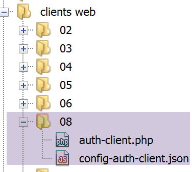
The client code [auth-client.php] is as follows:
<?php
// session management
//
// error management
//ini_set("error_reporting", E_ALL & ~ E_WARNING & ~E_DEPRECATED & ~E_NOTICE);
//ini_set("display_errors", "off");
//
// dependencies
require_once 'C:/myprograms/laragon-lite/www/vendor/autoload.php';
use Symfony\Component\HttpClient\HttpClient;
// customer configuration
const CONFIG_FILE_NAME = "config-auth-client.json";
// we retrieve the configuration
if (!file_exists(CONFIG_FILE_NAME)) {
print "Le fichier de configuration [" . CONFIG_FILE_NAME . "] n'existe pas\n";
exit;
}
if (!$config = \json_decode(\file_get_contents(CONFIG_FILE_NAME), true)) {
print "Erreur lors de l'exploitation du fichier de configuration jSON [" . CONFIG_FILE_NAME . "]\n";
exit;
}
// create a HTTP customer
$httpClient = HttpClient::create([
'auth_basic' => ['admin', 'admin'],
// "verify_peer" => false,
// "verify_host" => false
]);
try {
// make a request to the server
$response = $httpClient->request('GET', $config['url']);
// answer status
$statusCode = $response->getStatusCode();
print "---Réponse avec statut : $statusCode\n";
// we retrieve the headers
print "---Entêtes de la réponse\n";
$headers = $response->getHeaders();
foreach ($headers as $type => $value) {
print "$type: " . $value[0] . "\n";
}
// the jSON server response is displayed
print "---Réponse du serveur : {$response->getContent()}\n";
} catch (TypeError | RuntimeException $ex) {
// error is displayed
print "Erreur de communication avec le serveur : " . $ex->getMessage() . "\n";
}
Comments
- lines 27-31: we passed a parameter to the static method [HttpClient::create], an associative array;
- Line 28: The key [auth_basic] has a value consisting of a two-element array: [user, password]. The client will use these elements to authenticate with the web service. The key [auth_basic] designates an authentication type called [Autorization Basic], named after the header HTTP that the client will send. There are other authentication types;
- apart from this code, the client is identical to the previous ones;
To view the HTTP headers sent by the client, we will connect it to the generic TCP server [RawTcpServer], as we have done many times before:

We launch the client with the following [config-auth-client.json] configuration:
{
"url": "http://localhost:100/php7/scripts-web/08/auth-server.php"
}
The server [RawTcpServer] then receives the following lines:

- In [5], we see the [Autorization : Basic XXX] header sent by the client. The string XXX is the Base64-encoded version of [user:password];
To verify this, you can decode the received string on the [https://www.base64decode.org/] website:

17.11.2. The server

The server [auth-server.php] is as follows:
<?php
// dependencies
require_once 'C:/myprograms/laragon-lite/www/vendor/autoload.php';
use \Symfony\Component\HttpFoundation\Response;
use \Symfony\Component\HttpFoundation\Request;
// authorized users
$users = ["admin" => "admin"];
//
// retrieve the current query
$request = Request::createFromGlobals();
// authentication
$requestUser = $request->headers->get('php-auth-user');
$requestPassword = $request->headers->get('php-auth-pw');
// does the user exist?
$trouvé = array_key_exists($requestUser, $users) && $users[$requestUser] === $requestPassword;
// answer preparation
$response = new Response();
// set the response status code
if (!$trouvé) {
// not found - code 401
$response->setStatusCode(Response::HTTP_UNAUTHORIZED);
$response->headers->add(["WWW-Authenticate"=> "Basic realm=".utf8_decode("\"PHP7 par l'exemple\"")]);
} else {
// found - code 200
$response->setStatusCode(Response::HTTP_OK);
}
// response has no content, only HTTP headers
$response->send();
Comments
- line 9: authorized users, in this case a single user with login [admin] and password [admin];
- line 14: the user’s ID is retrieved from the header [PHP-AUTH-USER]. This is not a header sent by the client, but a header constructed by the server’s PHP;
- line 15: the user’s password is retrieved from the header [PHP-AUTH-PW], a header constructed by PHP;
- line 17: the user attempting to log in is searched for in the list of authorized users;
- lines 23-24: if the user is not recognized, the following is sent to the client
- line 23: the code [401 Unauthorized];
- line 24: a header [WWW-Authenticate: Basic realm=”quelque chose”]. Most browsers recognize this header and will display an authentication window prompting the user to authenticate. The HTTP headers must be encoded in ISO 8859-1. Netbeans texts are encoded in UTF-8. The [utf8_decode] function handles the conversion from UTF-8 to ISO 8859-1. Here, it was not necessary because the characters in the [PHP7 par l’exemple] string are the same in both UTF-8 and ISO 8859-1. The function is only there as a reminder of the encoding used by the headers;
- line 25: if the user has been recognized, the code [200 OK] is sent to the client;
Let’s request URL [auth-server.php] using a browser:

We see that the browser displays an authentication window. In [2], we see the value of the [WWW-Authenticate] header sent by the server. If we look at the HTTP headers received by the browser, we find the following:
- line 1: the response code [401 Unauthorized];
- line 6: the header HTTP [WWW-Authenticate];
- line 7: the body of the response is empty;
If, in [3-4], you enter [admin] twice, the server's response is as follows:
- line 1: the response code 200 OK;
- line 6: the response body is empty;
If incorrect credentials are entered in [3-4], the [Firefox] browser used for testing displays the authentication window indefinitely until the correct credentials are entered. Each time a round trip to the server occurs, the same response is received, which triggers the browser’s authentication window.
Let’s run the [auth-client.php] client with an unauthorized user. The server’s response is as follows:
---Answer with status: 401
---Response headers
Erreur de communication avec le serveur : HTTP/1.0 401 Unauthorized returned for "https://localhost/php7/scripts-web/08/auth-server.php".
- In [1], the client did indeed receive a 401 code;
- in [3], an exception was thrown in the client. It was the Symfony client [HttpClient] that threw it: it throws an exception when the status code of the HTTP response indicates that there was a server-side error, and the client attempts to read the headers or the content of the server’s response. The message on line 3 shows that the server responded with [HTTP/1.0 401 Unauthorized] to indicate that the user was not recognized;
Now let’s run the client [auth-client.php] with the authorized user [‘admin’,’admin’]. The server’s response is then as follows:
---Answer with status: 200
---Response headers
date: Wed, 05 Jun 2019 10:11:02 GMT
server: Apache/2.4.35 (Win64) OpenSSL/1.1.0i PHP/7.2.11
x-powered-by: PHP/7.2.11
cache-control: no-cache, private
content-length: 0
connection: close
content-type: text/html; charset=UTF-8
---Server response:
- line 1: the server responded with [HTTP/1. 200 OK];
- line 7: the response has no content (0 bytes);
17.11.3. Securing the client/server connection
We have seen that to authenticate with the server, the client sends the header:
If this line is intercepted by spyware, it can easily retrieve the [login, mot de passe] credentials encoded in Base64 within the string [YWRtaW46YWRtaW4=]. For this reason, authentication must take place over a secure connection between the client and the server. Secure URL connections use the [HTTPS] protocol instead of the HTTP protocol. The [HTTPS] protocol is the HTTP protocol within a secure client/server connection. Secure URL requests take the form [https://chemin_document].
Not all web servers accept URL in this form. They must be modified to be secure. Laragon’s Apache server is a secure server, but the HTTPS protocol is not enabled by default. It must be enabled in the Laragon menu:
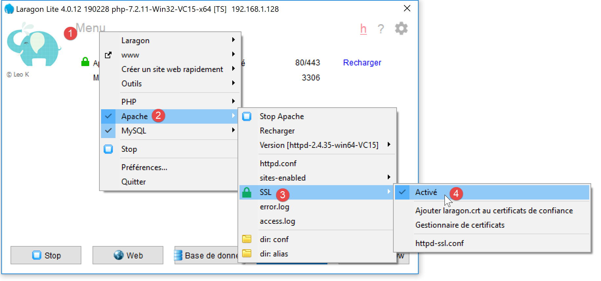
- In [4], you must enable SSL encryption for the Apache server;
Once this is done, the Apache server is automatically restarted:

- in [1], a green padlock appears: this indicates that the HTTPS protocol has been enabled;
- In [2], a new service port appears—port 443 in this case. This is the service port for the secure HTTPS protocol;
Now that we have a secure server, let’s modify the client’s configuration file [config-auth-client.json] as follows:
{
"url": "https://localhost:443/php7/scripts-web/08/auth-server.php"
}
In [2], the protocol has become [https] and the port [443].
Now let’s run the [auth-client.php] client with the authorized user [admin, admin]. The console output is as follows:
The Symfony client [HttpClient] threw an exception because the server sent it a trust certificate that [HttpClient] did not accept. Communication SSL uses trust certificates certified by official authorities. When the HTTPS protocol was enabled on the Laragon Apache server, a self-signed certificate was generated for the Apache server. A self-signed certificate is a certificate not validated by an official authority. The Symfony client [HttpClient] rejected this self-signed certificate.
It is possible to instruct [HttpClient] not to verify the validity of the certificate sent by the server. This is done using options in the [HttpClient::create] method:
// create a HTTP customer
$httpClient = HttpClient::create([
'auth_basic' => ['admin', 'admin'],
"verify_peer" => false
]);
Line 4 specifies that the server certificate should not be verified. We had already encountered this issue in the [http-02.php] script mentioned in the linked section. That script used the [libcurl] library to connect to the HTTP and HTTPS sites. We had used the following configuration for that library:
// Initialisation d'a cURL session
$curl = curl_init($url);
if ($curl === FALSE) {
// il y a eu une erreur
return "Erreur lors de l'initialisation de la session cURL pour le site [$site]";
}
// options de curl
$options = [
// mode verbose
CURLOPT_VERBOSE => true,
// nouvelle connexion - pas de cache
CURLOPT_FRESH_CONNECT => true,
// timeout de la requête (en secondes)
CURLOPT_TIMEOUT => $timeout,
CURLOPT_CONNECTTIMEOUT => $timeout,
// ne pas vérifier la validité des certificats SSL
CURLOPT_SSL_VERIFYPEER => false,
// suivre les redirections
CURLOPT_FOLLOWLOCATION => true,
// récupération du document demandé sous la forme d'a character string
CURLOPT_RETURNTRANSFER => true
];
// paramétrage de curl
curl_setopt_array($curl, $options);
Line 17: The constant [CURLOPT_SSL_VERIFYPEER] controls whether or not to verify the certificate sent by the server. The client [HttpClient] is actually a client [curl] when the extension [curl] is enabled in the configuration of PHP, as is the case here. The class instantiated by [HttpClient::create] is then the [CurlHttpClient] class. The constants of [curl] are available in this class but under different names:
We have highlighted in yellow the constants used by [CurlHttpClient].
If we now run the [auth-client] client with the user [admin, admin], we get the following result:
---Answer with status: 200
---Response headers
date: Wed, 05 Jun 2019 10:44:37 GMT
server: Apache/2.4.35 (Win64) OpenSSL/1.1.0i PHP/7.2.11
x-powered-by: PHP/7.2.11
cache-control: no-cache, private
content-length: 0
connection: close
content-type: text/html; charset=UTF-8
---Server response:
The user was successfully recognized. If we run the [auth-client] client with a user other than [admin, admin], we get the following result:
Now we know how to authenticate with a secure server.